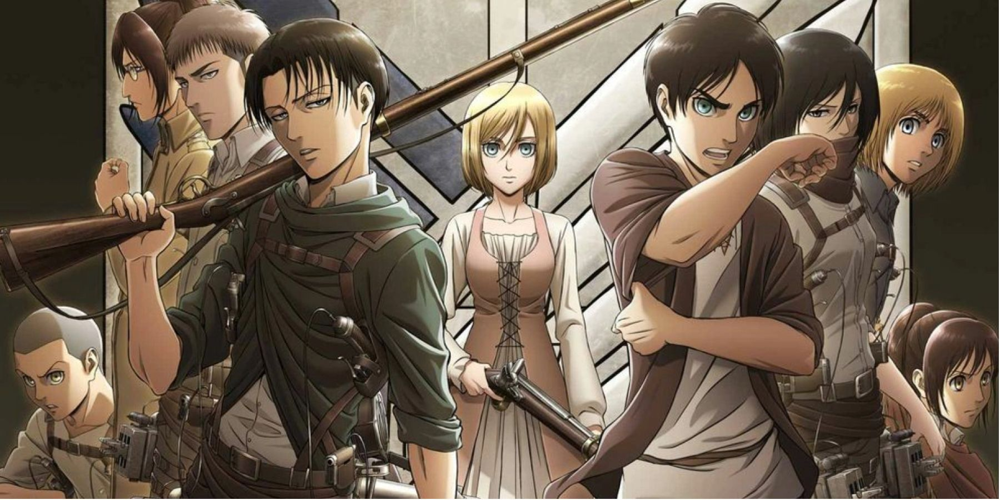
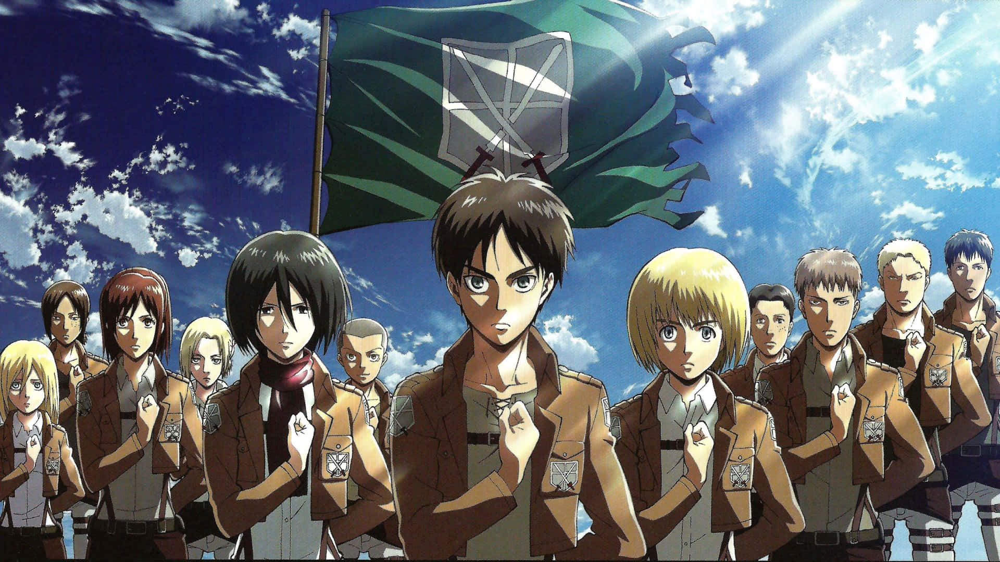

About
Attack on Titan (Japanese: 進撃の巨人, Hepburn: Shingeki no Kyojin, lit. 'The Advancing Giant') is a Japanese dark fantasy anime television series, adapted from the manga series of the same name by Hajime Isayama. The series premiered on April 7, 2013, and concluded on November 5, 2023. It has aired on MBS TV (first two seasons) and NHK General TV (third season onwards). In North America, the series has been streamed on Crunchyroll, Funimation and Hulu. Attack on Titan has also aired on Adult Swim's Toonami programming block in the United States.
Geners
- Action
- Drama
- Fantasy
- Mystery
Charecters
- Eren Yeager
- Mikasa Ackarman
- Armin Arlet
- Levi Ackarman
- Erwin Smith